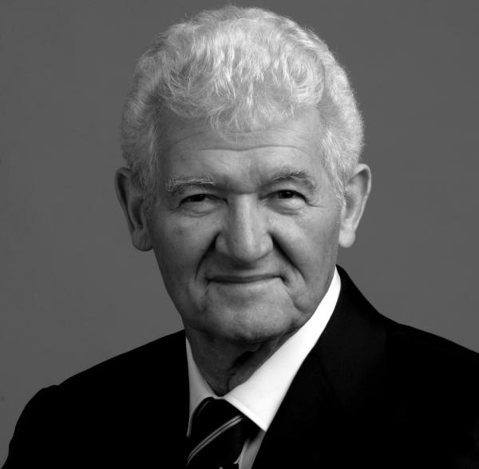
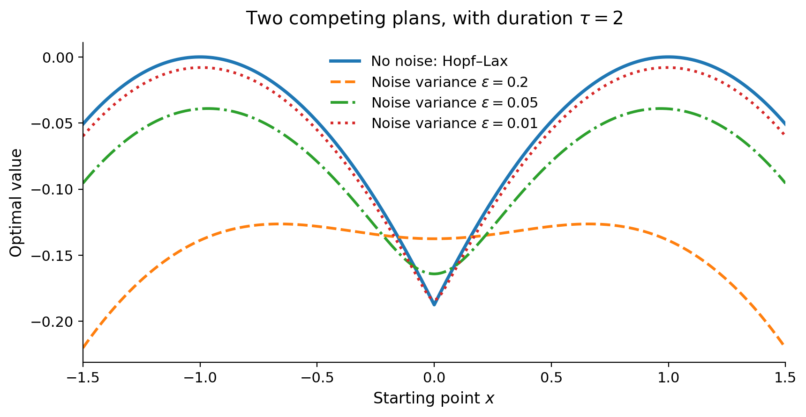

Stochastic control and Bellman
Let \(g\) be a terminal reward and \(L\) a convex running cost. Consider the controlled diffusion
\[ dX_s^u= \textcolor{blue}{u_s}\,ds+\sqrt\varepsilon\,dW_s, \qquad X_t^u=x, \tag{1}\]
where \(W\) is standard Brownian motion in \(\mathbb{R}^D\). The value is
\[ V_\varepsilon^L(t,x) = \sup_u\mathbb{E} {\left[ g(X_T^u)-\int_t^T L(u_s)\,ds \;\middle|\;X_t^u=x \right]} . \tag{2}\]
Holding the control constant over a short first interval, dynamic programming gives (Evans 2024, chap. 7)
\[ V_\varepsilon^L(t,x) =\sup_a {\left\{ -\delta L(a)+\mathbb{E} {\left[ V_\varepsilon^L(t+\delta,X_{t+\delta}^a)\mid X_t^a=x \right]} \right\}} +o(\delta). \]
Expanding by Itô’s formula, subtracting \(V_\varepsilon^L(t,x)\) and dividing by \(\delta\) yields the HJB equation
\[ \partial_tV_\varepsilon^L+\frac\varepsilon 2\Delta V_\varepsilon^L +\underbrace{\sup_a {\left\{ \left< a,\nabla V_\varepsilon^L \right>-L(a) \right\}} }_{H(\nabla V_\varepsilon^L)}=0, \qquad V_\varepsilon^L(T,x)=g(x), \tag{3}\]
where \(H=L^*\) is the convex conjugate of \(L\). For \(L(u)=\tfrac12\|u\|^2\), we have \(H(p)=\tfrac12\|p\|^2\). Writing \(V_\varepsilon=V_\varepsilon^L\) in this quadratic case gives
\[ \partial_tV_\varepsilon +\frac\varepsilon 2\Delta V_\varepsilon +\frac12\|\nabla V_\varepsilon\|^2=0, \qquad V_\varepsilon(T,x)=g(x), \tag{4}\]
with optimal feedback \( \textcolor{blue}{u_\varepsilon^\star(t,x)=\nabla V_\varepsilon(t,x)}\).
Cole–Hopf
The Cole–Hopf transformation sets \(h_\varepsilon=e^{V_\varepsilon/\varepsilon}\) and cancels the quadratic gradient term in Equation 4:
\[ \partial_t h_\varepsilon+\frac\varepsilon 2\Delta h_\varepsilon = \frac{h_\varepsilon}{\varepsilon} {\left( \partial_tV_\varepsilon+\frac\varepsilon 2\Delta V_\varepsilon+\frac 12\|\nabla V_\varepsilon\|^2 \right)} =0. \]
Solving this backward heat equation with terminal condition \(h_\varepsilon(T,x)=e^{g(x)/\varepsilon}\) gives
\[ \textcolor{green}{ V_\varepsilon(t,x) =\varepsilon\log\mathbb{E} {\left[ e^{g(x+\sqrt\varepsilon W_{T-t})/\varepsilon} \right]} . } \tag{5}\]
The expectation here is over uncontrolled Brownian motion; the change-of-measure derivation is given in Doob, Girsanov and Bellman. Writing \(\tau=T-t\) and using the Gaussian density,
\[ V_\varepsilon(t,x) = \varepsilon\log {\left[ \frac{1}{(2\pi\varepsilon\tau)^{D/2}} \int_{\mathbb{R}^D} \exp {\left\{ \frac 1\varepsilon {\left( g(y)-\frac{\|y-x\|^2}{2\tau} \right)} \right\}} \,dy \right]} . \tag{6}\]
Zero noise and Hopf–Lax
As \(\varepsilon\downarrow0\), Laplace’s principle turns Equation 6 into
\[ \textcolor{green}{ V_0(t,x) :=\lim_{\varepsilon\downarrow 0}V_\varepsilon(t,x) = \sup_{y\in\mathbb{R}^D} {\left\{ g(y)-\frac{\|y-x\|^2}{2(T-t)} \right\}} . } \tag{7}\]
The Gaussian normalization contributes \(-\tfrac{\varepsilon D}{2}\log(2\pi\varepsilon\tau)\to0\). This is the Hopf–Lax formula in the reward-maximization convention. This means that the deterministic control problem with quadratic cost
\[ \sup_{u\in\mathcal{U}} {\left\{ \int_t^T -\frac 12\|u_s\|^2\,ds + g(X_T^u) \right\}} \quad\text{subject to}\quad \dot X_s^u=u_s, \quad X_t^u=x, \]
has a value given by the supremum over endpoints as in Equation 7. Interestingly, this can also be derived very simply from the Cauchy-Schwarz inequality since \(\int_t^T \|u_s\|^2\,ds \geq \|X_T^u-x\|^2 / (T-t)\), from which the conclusion follows readily. The limiting HJB equation is \[ \partial_tV_0+\tfrac12\|\nabla V_0\|^2=0 \]
and has to be interpreted in the viscosity sense when \(V_0\) develops corners. For example, with \(g(y)=-\tfrac14(y^2-1)^2\) and \(T-t=2\), the stochastic values converge to a Hopf–Lax value with a corner at \(x=0\) (Figure 1).
